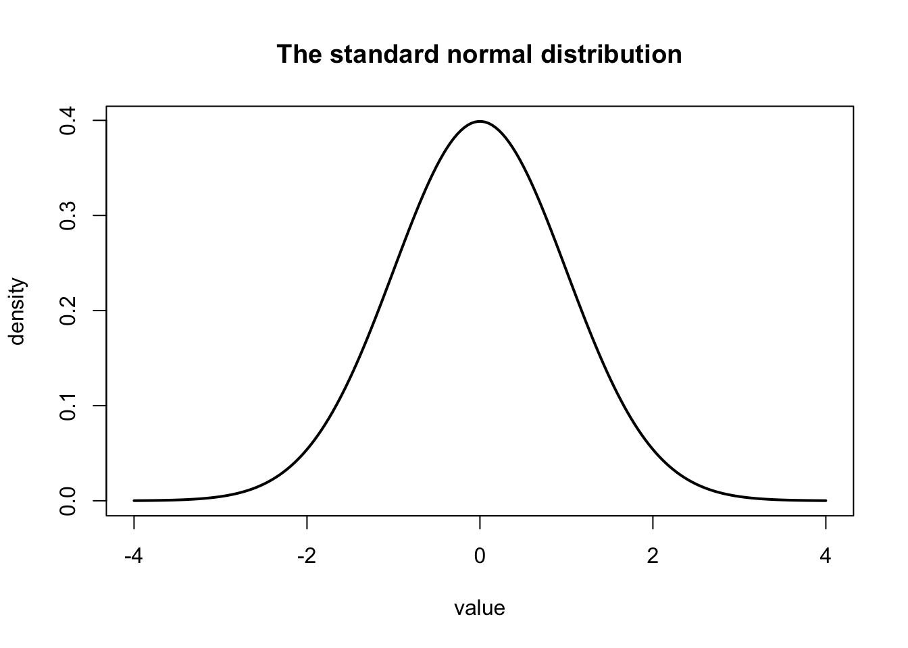
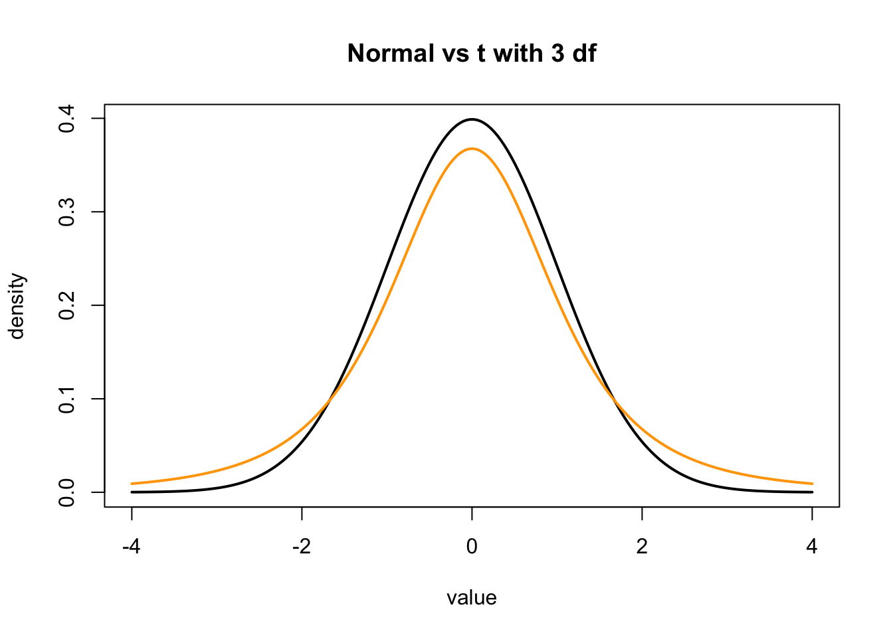
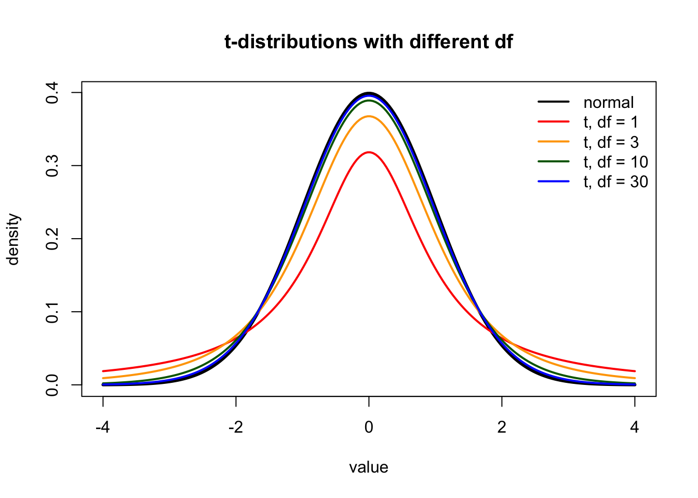
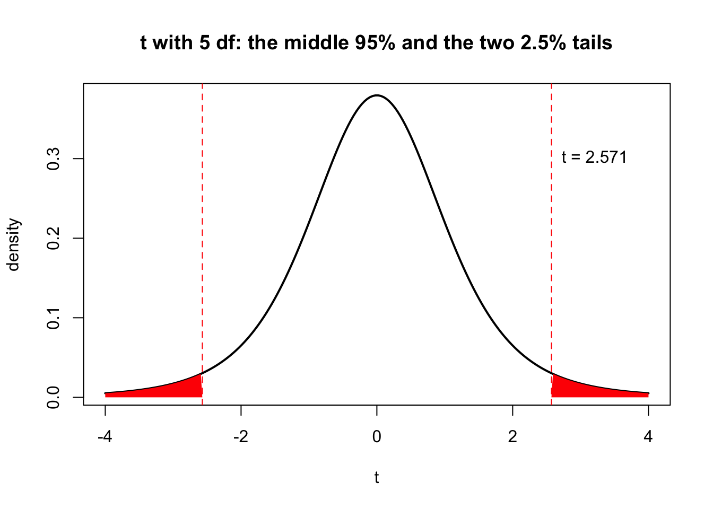
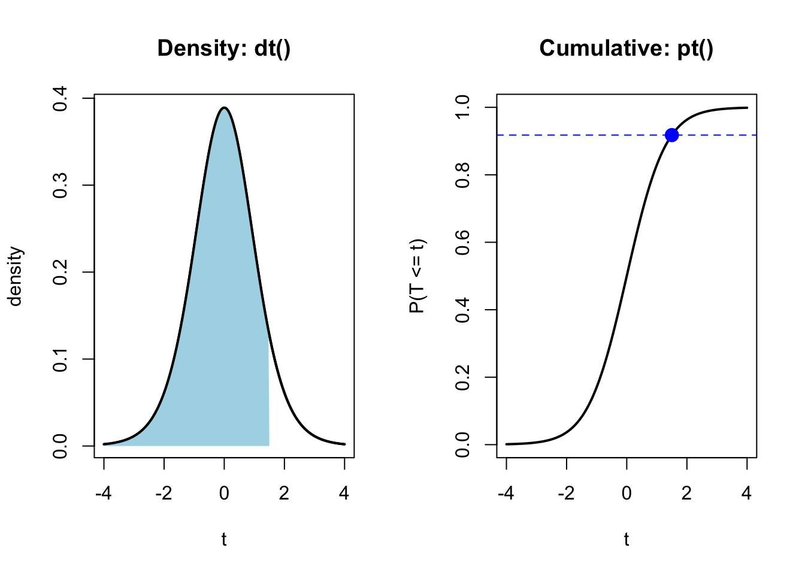

renv::load() # switch this R session to the course's package library
renv::restore() # install this week's packages (section 1.2)Seminar 2 — Confidence Intervals & Effect Sizes
PSY40760 Advanced Data Analysis and Statistics in R
Worksheet 2
Welcome
This is the worksheet for our second session. It lists the reading and the to-do items for this week, then guides you through the practical.
Session at a glance
| Workshop Date | Wednesday 30 September 2026 |
| Due Date | Sunday 11 October 2026, 23:59 |
| Time | 14:00 – 16:50 (170 min) |
| Room | L249-SUTH |
| Staff | Dr Ondrej Zika, Cameron McCabe |
| Theory | Confidence intervals & effect sizes |
| Practical | Paths, packages, the t-distribution; importing and wrangling data; CIs and effect sizes in R |
Before you arrive
1. Set up the course folder
All practicals of the module live in one course folder, with the same structure on every computer. For the first two seminars it looks like this:
psy40760-practicals-2026/ <- the course folder (the "root")
├── .root-practicals <- empty marker file: marks the root (section 1.3)
├── .Rprofile <- renv set-up files (section 1.2)
├── renv.lock
├── renv/
├── seminar1-intro-to-stats-and-R/
│ ├── seminar-01-worksheet.qmd
│ └── Cheatsheets/
└── seminar-02-confidence-intervals-and-effect-sizes/
├── seminar-02-worksheet.qmd <- this worksheet
└── seminar-02-worksheet_files/ <- this week's data
├── weight_trial.csv
├── weight_followup_wide.csv
└── simulate_datasets.R
The renv files and .root-practicals sit at the top of the course folder; each seminar has its own folder below it, holding the worksheet, its _files folder (data) and any extra materials. Keep the folder and file names exactly as shown: the code in the worksheets relies on them.
Option A (easiest): clone the course repository. Once, in a terminal:
git clone git@github.com:ozika/psy40760-practicals-2026.gitBefore each practical, run git pull inside the folder to get the new week’s files. Then, in RStudio, point R at the course folder (Session → Set Working Directory → Choose Directory…) and run, in the console:
Option B: set it up by hand.
- Create a folder called
psy40760-practicals-2026wherever you keep your work. - In RStudio, point R at that folder (Session → Set Working Directory → Choose Directory…) and create the marker file (step 2 below).
- Download each seminar folder and place it inside the course folder exactly as in the tree above.
- Set up renv once and install this week’s packages (step 4 below). Here the folder is your own project, so you install the packages yourself.
# Step 2: an empty marker file; it is hidden because the name starts with a dot
file.create(".root-practicals")
# Step 4: set up renv and install this week's packages
renv::init() # creates .Rprofile, renv.lock and renv/
renv::install(c("here", "dplyr", "tidyr"))
renv::snapshot() # records the versions in renv.lockEither way, you do not need to create an RStudio Project: renv takes care of the packages, and the .root-practicals file takes care of finding the data.
2. DataCamp
This week’s two DataCamp courses are listed under Part 2. Use the same UCD account as last week.
3. Reading
| Theory | Statistical Thinking for the 21st Century (Poldrack) — Ch. 10, Quantifying effects and designing studies |
| Modern Statistics with R — Ch. 3, The cornerstones of statistics (especially §3.5 Confidence intervals and §3.6 Comparing mean values) | |
| Lakens, D. (2013). Calculating and reporting effect sizes to facilitate cumulative science: a practical primer for t-tests and ANOVAs. Frontiers in Psychology, 4, 863. | |
| Practical | Statistical Thinking for the 21st Century (Poldrack) — Ch. 3, Summarizing data |
Today’s session
Theory: what a hypothesis test returns and what it does not; the sampling distribution and the standard error; the normal and t-distributions and degrees of freedom; confidence intervals and what the 95% guarantees; unstandardised and standardised effect sizes (and how t differs from Cohen’s d); meta-analysis and selection for significance.
Practical: by the end you should be able to point R at a file with a relative path built by here(), manage packages with renv and load them, work with the t-distribution in R (density, critical values, probabilities), import a .csv file, wrangle it with dplyr, and compute confidence intervals and effect sizes, choosing the effect size that fits the question.
The session runs in three parts: a joint walkthrough (Part 1), independent DataCamp work (Part 2), and in-notebook exercises (Part 3). The challenges at the end are optional.
Assessment
Deadline for completion: Sunday 11 October, 23:59.
- Complete the two assigned DataCamp courses (“Introduction to Importing Data in R” and “Data Manipulation with dplyr”).
- Submit Worksheet 2 as a fully runnable
.qmdfile with the Part 3 exercises completed. - Optional: the challenge exercises, and pushing your code to a GitHub repository (please still submit the
.qmdfile on Brightspace).
Name the file using your Student Number and surname as prefix, e.g. 2332334_Smith_worksheet_02.qmd
Assignments 1 and 2 are mandatory and constitute 3% of your grade (pass/fail). Assignment 3 is optional and voluntary.
Part 1: Joint walkthrough
We will work through this section together. Run each chunk as we go and make sure you understand the output before moving on.
Section A: Files, packages and paths
1.1 Where is R looking? Working directories and paths
Every file on a computer has a path: the list of folders you pass through to reach it. When you ask R to read a file, R has to find it, and it starts looking in the working directory.
getwd() # the folder R is currently working in
list.files() # the files and folders inside itThere are two ways to write a path:
- an absolute path starts from the top of the computer, e.g.
"/Users/ondrej/Documents/psy40760/seminar-02-worksheet_files/weight_trial.csv"(Mac) or"C:/Users/ondrej/Documents/psy40760/..."(Windows); - a relative path starts from the working directory, e.g.
"seminar-02-worksheet_files/weight_trial.csv".
An absolute path only works on the computer it was written on: your colleague does not have a folder called /Users/ondrej. Relative paths travel with the project, which is what we want.
file.exists("seminar-02-worksheet_files/weight_trial.csv") # relative path: TRUE if R can find itTwo special symbols appear in relative paths: . means “this folder” and .. means “one folder up”. So "../data/file.csv" means “go up one folder, then into data”.
The catch: a relative path is only correct if the working directory is what you think it is. When you type in the console, the working directory is whatever you pointed R at (here, the course folder); when you run a chunk of a .qmd, or render it, it is the folder the .qmd sits in. If these differ, the same line of code finds the file in one case and fails in the other. You may be tempted to fix this with setwd("/Users/..."), but that puts an absolute path back into your code. Section 1.3 shows a better solution, which needs a package, so packages come first.
Try it: run list.files("seminar-02-worksheet_files"). What files are in this week’s data folder?
# your code here1.2 Packages: installing, loading and managing
Base R can do a lot, but most work in R relies on packages: bundles of functions written by others. Most are distributed through CRAN, R’s official repository.
In this module we manage packages with renv. renv gives each project its own package library and records the exact version of every package in a file called renv.lock, so the code runs the same on your laptop, on ours, and in a year’s time. The only time you use install.packages() is to install renv itself (you did this before Seminar 1):
install.packages("renv") # once per computer; never needed again for other packagesThere are two separate steps, and it helps to keep them apart:
| Step | Function | How often |
|---|---|---|
| Install (into the project library) | renv::restore() in the course project; renv::install("here") in your own projects |
when renv.lock changes, or when you add a package |
| Load (make available in this session) | library(here) |
every session, at the top of your script |
The course repository already lists this week’s packages (here, dplyr, tidyr) in its renv.lock. After git pull and renv::load() (see “Before you arrive”), run, in the console:
renv::restore() # installs exactly the versions recorded in renv.lock
renv::status() # checks that the project library matches renv.lockRun these in the console, not in the worksheet: an install line inside a .qmd would run again every time the document is rendered.
Check that a package is installed, and which version you have:
requireNamespace("dplyr", quietly = TRUE) # TRUE if installed
packageVersion("dplyr")[1] '1.2.0'Now load the packages we use today:
library(here)Warning: package 'here' was built under R version 4.4.1here() starts at /Users/zika/projects/2026-advanced-stats-mscbn-PSY40760/2026-materials/psy40760-practicals-2026library(dplyr)Warning: package 'dplyr' was built under R version 4.4.3
Attaching package: 'dplyr'The following objects are masked from 'package:stats':
filter, lagThe following objects are masked from 'package:base':
intersect, setdiff, setequal, unionWhen dplyr loads it prints a message that some objects are masked: dplyr has its own filter() and lag(), which now hide the versions in the stats package. You can always say exactly which one you mean with package::function():
dplyr::filter(...) # dplyr's filter: keep rows
stats::filter(...) # stats' filter: a time-series operationThe :: form also works without library(), which is handy when you need one function from a package once.
A few management tasks:
- Your own projects:
renv::init()sets up renv in a new project,renv::install("pkg")adds a package, andrenv::snapshot()records the versions you use inrenv.lock, so thatrenv::restore()can rebuild the same library on another computer. - In the course project, do not run
renv::snapshot()(orrenv::install()): it would change the course’srenv.lockand cause a conflict the next time yougit pull. If a new package is needed, it will arrive with the weekly update andrenv::restore(). renv::update()updates the project’s packages andrenv::remove("name")removes one (again, only in your own projects).sessionInfo()lists R’s version and every loaded package: paste it into a help request so others can reproduce your setup.
Try it: run renv::status() and check which version of here you have installed.
# your code here1.3 Relative paths with here
here solves the working-directory problem. It finds the project root and builds paths from there, whatever the working directory happens to be. In this course we mark the root of the practicals explicitly, with an empty file called .root-practicals (a hidden file: the name starts with a dot, so tick Show Hidden Files in the RStudio Files pane to see it). here::i_am() tells here to use the nearest folder, at or above the current one, that contains this file:
here::i_am(".root-practicals")here() starts at /Users/zika/projects/2026-advanced-stats-mscbn-PSY40760/2026-materials/psy40760-practicals-2026here() # the practicals root on this computer[1] "/Users/zika/projects/2026-advanced-stats-mscbn-PSY40760/2026-materials/psy40760-practicals-2026"here() joins folder and file names into a full path for you. List the folders in order, then the file name:
here("seminar-02-confidence-intervals-and-effect-sizes", "seminar-02-worksheet_files", "weight_trial.csv")[1] "/Users/zika/projects/2026-advanced-stats-mscbn-PSY40760/2026-materials/psy40760-practicals-2026/seminar-02-confidence-intervals-and-effect-sizes/seminar-02-worksheet_files/weight_trial.csv"file.exists(here("seminar-02-confidence-intervals-and-effect-sizes", "seminar-02-worksheet_files", "weight_trial.csv"))[1] TRUEThe code contains no absolute path, yet it gives R a complete one on every computer. The same line works when you run the chunk and when you render the document, on your laptop and on ours.
If i_am() gives an error, R could not find .root-practicals in the current folder or any folder above it: check with getwd() that your working directory is inside the course folder, and that .root-practicals is at its top (see “Before you arrive”).
With a path in hand, reading the file is one line. You met read.csv() last week:
trial <- read.csv(here("seminar-02-confidence-intervals-and-effect-sizes", "seminar-02-worksheet_files", "weight_trial.csv"))
head(trial) id site group sex age weight_start_kg weight_end_kg wellbeing
1 P001 Dublin control female 42 72.4 81.5 28
2 P002 Cork programme female 44 89.3 86.4 32
3 P003 Cork programme female 22 73.2 67.8 30
4 P004 Cork control female 43 100.0 105.8 14
5 P005 Galway control female 34 88.2 91.7 17
6 P006 Dublin programme male 26 86.9 86.4 9We will come back to this data set in Part 3.
Section B: The t-distribution and probabilities
With files and packages in place, we now turn to the statistics of the lecture: the t-distribution, critical values, and the probability of an event.
1.4 From the normal distribution to the t-distribution
In the lecture, the sampling distribution of an estimate was approximated by the normal distribution, or by the t-distribution when the spread has to be estimated from the data. R has functions for both. We will build a picture of them in small steps.
Step 1. Make a grid of values along the x-axis.
x <- seq(-4, 4, length.out = 200)
head(x)[1] -4.000000 -3.959799 -3.919598 -3.879397 -3.839196 -3.798995Step 2. dnorm() gives the height of a normal curve at each value. A normal distribution has two parameters, its mean and its standard deviation, and dnorm() takes them as inputs: dnorm(x, mean = ..., sd = ...). With mean = 0 and sd = 1 we get the standard normal distribution. Plot height against x as a line.
plot(x, dnorm(x, mean = 0, sd = 1), type = "l", lwd = 2,
xlab = "value", ylab = "density", main = "The standard normal distribution")
mean = 0 and sd = 1 are the defaults: if you leave them out, R uses these values, which is why the code below writes just dnorm(x). Try changing them, e.g. dnorm(x, mean = 1, sd = 2): the mean moves the curve along the x-axis, and the SD makes it wider and flatter.
Step 3. dt() does the same for the t-distribution. It has one parameter, the degrees of freedom, given as df: dt(x, df = ...). The degrees of freedom count how many independent pieces of information are left for estimating the spread. With one sample of n people, one piece is used up by estimating the mean first, so df = n - 1; with two independent groups, one is used up per group mean, so df = n1 + n2 - 2. Unlike mean and sd in dnorm(), df has no default: you always have to give it. (There is no mean or SD to set: the t-distribution is already on a standardised scale, centred on 0.) Add a t-distribution with 3 df, i.e. a sample of 4 people, to the plot with lines().
plot(x, dnorm(x), type = "l", lwd = 2,
xlab = "value", ylab = "density", main = "Normal vs t with 3 df")
lines(x, dt(x, df = 3), lwd = 2, col = "orange")
The t-distribution is lower in the middle and has heavier tails: extreme values are more likely. This is the price of estimating the spread from a small sample.
Step 4. Several degrees of freedom on one plot, with a legend.
dfs <- c(1, 3, 10, 30)
cols <- c("red", "orange", "darkgreen", "blue")
plot(x, dnorm(x), type = "l", lwd = 3, col = "black",
xlab = "value", ylab = "density", main = "t-distributions with different df")
for (i in 1:4) {
lines(x, dt(x, df = dfs[i]), lwd = 2, col = cols[i])
}
legend("topright", legend = c("normal", paste("t, df =", dfs)),
col = c("black", cols), lwd = 2, bty = "n")
As the degrees of freedom grow, the t-distribution becomes indistinguishable from the normal. At 30 df the two lines almost overlap.
Try it: plot the normal curve together with a t-distribution with 100 df. Can you see any difference?
# your code here1.5 The critical t-value
A 95% confidence interval uses the value that cuts off the middle 95% of the distribution: 2.5% in each tail. Such a value is a quantile, and the q functions return quantiles: you give them a probability, they return the value.
qnorm(0.975) # normal: 97.5% of the distribution lies below 1.96[1] 1.959964qt(0.975, df = 5) # t with 5 df: the cut-off is further out[1] 2.570582Why 0.975 and not 0.95? We want 2.5% in the upper tail, so 97.5% lies below the cut-off.
The critical value shrinks towards 1.96 as the degrees of freedom grow:
dfs <- c(2, 5, 10, 24, 46, 100, 1000)
round(qt(0.975, df = dfs), 3)[1] 4.303 2.571 2.228 2.064 2.013 1.984 1.962Trial A in the lecture had 24 + 24 − 2 = 46 df, hence its critical value of 2.013.
Now mark the critical values on the plot. abline(v = ...) draws vertical lines, and polygon() shades the two tails.
df <- 5
crit <- qt(0.975, df = df)
plot(x, dt(x, df = df), type = "l", lwd = 2,
xlab = "t", ylab = "density", main = "t with 5 df: the middle 95% and the two 2.5% tails")
abline(v = c(-crit, crit), lty = 2, col = "red")
upper <- x[x >= crit]
polygon(c(crit, upper, max(upper)), c(0, dt(upper, df), 0), col = "red", border = NA)
lower <- x[x <= -crit]
polygon(c(min(lower), lower, -crit), c(0, dt(lower, df), 0), col = "red", border = NA)
text(crit, 0.3, paste("t =", round(crit, 3)), pos = 4)
Try it: find the critical value for a 99% interval with 20 df. Is it larger or smaller than the 95% one, and why?
# your code here1.6 Probabilities: the density and the cumulative distribution
For a continuous variable, the height of the curve (the density) is not a probability. Probabilities are areas under the curve. Two functions answer two different questions:
| Function | Question it answers |
|---|---|
dt(q, df) |
How high is the curve at q? (a density, not a probability) |
pt(q, df) |
What is the probability of a value at or below q? (the area to the left) |
dt(1.5, df = 10) # height of the curve at 1.5[1] 0.1274448pt(1.5, df = 10) # P(T <= 1.5)[1] 0.9177463The probability of any single exact value, such as exactly 1.5, is zero: a line has no area. We can only ask about ranges of values.
pt() is the cumulative distribution function: it adds up the area from the far left up to q. Plotting it against q gives an S-shaped curve that rises from 0 to 1.
df <- 10
par(mfrow = c(1, 2)) # two plots side by side
plot(x, dt(x, df), type = "l", lwd = 2, xlab = "t", ylab = "density", main = "Density: dt()")
left <- x[x <= 1.5]
polygon(c(min(left), left, 1.5), c(0, dt(left, df), 0), col = "lightblue", border = NA)
lines(x, dt(x, df), lwd = 2)
plot(x, pt(x, df), type = "l", lwd = 2, xlab = "t", ylab = "P(T <= t)", main = "Cumulative: pt()")
points(1.5, pt(1.5, df), pch = 19, col = "blue", cex = 1.5)
abline(h = pt(1.5, df), lty = 2, col = "blue")
par(mfrow = c(1, 1)) # back to one plot at a timeThe shaded area on the left and the height of the point on the right are the same number, 0.918.
The four functions for each distribution follow one naming pattern. For the t-distribution:
| Prefix | Function | Gives |
|---|---|---|
d |
dt() |
density (height of the curve) |
p |
pt() |
probability of a value at or below q |
q |
qt() |
the value below which a given probability lies (the inverse of pt()) |
r |
rt() |
random draws from the distribution |
The same pattern holds for the normal (dnorm, pnorm, qnorm, rnorm) and for other distributions.
Try it: check that qt() undoes pt(): compute pt(1.5, df = 10), then feed the result into qt() with the same df.
# your code here1.7 Bigger than, smaller than, and between
pt() always gives the area to the left. Every other question can be built from it.
Smaller than a value:
pt(2, df = 10) # P(T <= 2)[1] 0.963306Bigger than a value: the total area is 1, so subtract.
1 - pt(2, df = 10) # P(T > 2)[1] 0.03669402pt(2, df = 10, lower.tail = FALSE) # the same, asked directly[1] 0.03669402Between two values: the area to the left of the upper value, minus the area to the left of the lower value.
pt(2, df = 10) - pt(-1, df = 10) # P(-1 < T < 2)[1] 0.7928594More extreme than a value in either direction. This is the two-sided p-value: the probability of a t at least this far from 0, if the null hypothesis were true. Because the distribution is symmetric, double one tail.
2 * pt(-abs(2), df = 10) # P(|T| >= 2)[1] 0.07338803Check this against Trial A from the lecture: t(46) = 3.03, p = .004.
2 * pt(-3.03, df = 46)[1] 0.004004523The same reasoning works for any normal distribution. pnorm() takes the mean and SD directly. Suppose weight change over 12 weeks in a control group is normally distributed with mean 1 kg and SD 5 kg. What proportion of people lose more than 5 kg?
1 - pnorm(5, mean = 1, sd = 5) # P(loss > 5)[1] 0.2118554pnorm(2, mean = 1, sd = 5) - pnorm(0, mean = 1, sd = 5) # P(0 < loss < 2)[1] 0.1585194Try it: with the same distribution (mean 1 kg, SD 5 kg), what proportion of people gain weight, i.e. have a weight loss below 0?
# your code herePart 2: DataCamp
Complete the following two assigned courses on DataCamp. They count towards your grade (see Assessment above).
- Introduction to Importing Data in R: reading flat files with
read.csv(),read.delim()andread.table(), file paths, column names and column classes. - Data Manipulation with dplyr:
select(),filter(),arrange(),mutate(),count(),group_by()+summarize(), and chaining them with the pipe%>%.
Part 3 uses both, so it is worth doing the DataCamp courses first.
Part 3: Exercises in RStudio
These exercises are completed independently, in this notebook. All 30 are mandatory. Write your code in the chunks provided and check each result before moving on. Where a question asks you to explain or interpret, write your answer as a comment (#) in the chunk, or as text below it.
The data. weight_trial.csv comes from a fictional (simulated) 12-week trial of a weight-loss programme. Participants were randomised to the programme or to a control group at one of three sites. The columns are:
| Column | Meaning |
|---|---|
id |
participant ID |
site |
recruitment site: Dublin, Cork or Galway |
group |
control or programme |
sex, age |
participant’s sex and age (years) |
weight_start_kg |
weight at the start (kg) |
weight_end_kg |
weight after 12 weeks (kg) |
wellbeing |
score on a wellbeing questionnaire at 12 weeks (0–40; higher = better) |
As in the lecture, assume that a weight loss is only worth the cost of the programme if it is at least 2 kg (the smallest effect of interest).
We use the pipe %>% from dplyr, as in DataCamp. (R also has a built-in pipe, |>, which works the same way for everything we do here.)
Importing the data (1–5)
Exercise 1 — Packages
Load the here and dplyr packages.
# your code hereExercise 2 — Building the path
Use here() to build the path to weight_trial.csv and store it in a variable called data_path. Use file.exists() to check that R can find the file.
# your code hereExercise 3 — Importing
Import the file with read.csv() and store it as trial. How many rows and columns does it have?
# your code hereExercise 4 — Checking what was imported
Use str() (or glimpse() from dplyr) to look at the column types. Which columns are character, which are numeric? Then use count() to find how many participants are in each group.
# your code hereExercise 5 — Missing values
How many missing values (NA) does each column contain? Hint: is.na() returns TRUE/FALSE for every value, and colSums() adds these up column by column. Which participants have a missing wellbeing score?
# your code hereWrangling (6–12)
Exercise 6 — mutate(): the outcome
Add a column weight_loss_kg equal to the start weight minus the end weight (so that a positive number means weight was lost). Save the result back into trial.
# your code hereExercise 7 — select() and relocate()
Create a smaller data frame trial_small with only id, site, group and weight_loss_kg, in that order. Then, in the full trial data, move weight_loss_kg so that it is the column directly after group (hint: relocate() with .after =).
# your code hereExercise 8 — filter()
How many programme participants lost at least 2 kg? How many control participants did?
# your code hereExercise 9 — arrange() and slice_max()
Show the five participants who lost the most weight, with the largest loss first. Which groups are they in?
# your code hereExercise 10 — group_by() and summarise()
For each group, compute the number of participants, the mean and the SD of weight_loss_kg. Store the result as loss_summary; you will need these numbers later.
# your code hereExercise 11 — Counting combinations
Use count() to show how many participants there are in each combination of site and group. Are the sites the same size?
# your code hereExercise 12 — Recoding with ifelse()
Add a column worthwhile that is "yes" if a participant lost at least 2 kg and "no" otherwise. Then compute the proportion of "yes" in each group. Hint: mean(worthwhile == "yes") inside summarise().
# your code hereProbabilities (13–18)
Exercise 13 — A normal model for the control group
Suppose weight loss in the control population is normally distributed, with the mean and SD you found for the control group in Exercise 10. Under this model, what is the probability that a control participant loses more than 5 kg? Compare this with the proportion of control participants in the data who actually lost more than 5 kg.
# your code hereExercise 14 — Between two values
Under the same model, what is the probability that a control participant’s weight change lies between −2 kg and +2 kg?
# your code hereExercise 15 — Smaller than, for the programme group
Now build the same kind of normal model for the programme group. What proportion of programme participants would be expected to lose less than the 2 kg threshold?
# your code hereExercise 16 — Critical values
For a t-distribution with the degrees of freedom of the programme group alone (n − 1), find the critical values for a 90%, a 95% and a 99% interval. Put them in one vector.
# your code hereExercise 17 — A t statistic by hand
For the programme group only, test whether the mean weight loss differs from 0. Compute by hand: the mean, the SD, n, the standard error (SE = SD / √n), the t statistic (t = mean / SE) and the two-sided p-value with pt(). Then check your t and p against t.test(x).
# your code hereExercise 18 — Where does a value lie?
Using your normal model for the programme group (Exercise 15), which weight loss is exceeded by only 10% of programme participants? Hint: this is a quantile, so use qnorm(). Compare it with the empirical value from quantile(x, 0.9).
# your code hereConfidence intervals (19–24)
Exercise 19 — A CI for one mean, by hand
Compute the 95% confidence interval for the mean weight loss in the programme group by hand: mean ± tcrit × SE, with tcrit from qt() and n − 1 degrees of freedom.
# your code hereExercise 20 — The same CI from t.test()
Run t.test() on the programme group’s weight loss and extract the confidence interval with $conf.int. Does it match Exercise 19?
# your code hereExercise 21 — Changing the confidence level
Compute the 90% and the 99% intervals for the same mean (the conf.level argument of t.test()). Which interval is widest? Explain in one sentence why.
# your code hereExercise 22 — A CI for the difference between groups, by hand
Compute the 95% CI for the difference in mean weight loss (programme minus control) by hand, using
\[SE_{diff} = \sqrt{\frac{s_1^2}{n_1} + \frac{s_2^2}{n_2}}\]
and a critical value with n₁ + n₂ − 2 degrees of freedom.
# your code hereExercise 23 — The same CI from t.test()
Run t.test(weight_loss_kg ~ group, data = trial). Extract the CI, the t statistic and the p-value. Two things to notice: (a) the sign — R subtracts the groups in alphabetical order, so this is control minus programme; (b) the interval differs slightly from yours, because t.test() uses the Welch correction for unequal variances, which changes the degrees of freedom. What are its degrees of freedom?
# your code hereExercise 24 — Reading the interval
Compare your interval for the difference with 0 and with the 2 kg threshold. Is the difference statistically significant at the 5% level? Can we conclude that the programme produces a worthwhile loss? Which of the lecture’s two problems, precision or relevance, does this trial have? Answer in two or three sentences.
# your answer here (as comments)Effect sizes (25–30)
Exercise 25 — An unstandardised effect size
Report the effect of the programme on weight as an unstandardised effect size: the mean difference in kg with its 95% CI. Write the one-sentence result as you would in a paper.
# your code hereExercise 26 — Cohen’s d by hand
Compute Cohen’s d for weight loss: the mean difference divided by the pooled SD,
\[d = \frac{M_1 - M_2}{SD_{pooled}}, \qquad SD_{pooled} = \sqrt{\frac{(n_1 - 1)s_1^2 + (n_2 - 1)s_2^2}{n_1 + n_2 - 2}}\]
# your code hereExercise 27 — Wellbeing, with missing values
Compute the mean difference and Cohen’s d for wellbeing (programme minus control). Remember that four scores are missing: remove them first (e.g. filter(!is.na(wellbeing))), and make sure the n in each group is the number of non-missing scores.
# your code hereExercise 28 — Standardised or unstandardised?
For each case below, decide whether you would report an unstandardised or a standardised effect size, and justify your choice in one sentence (see the lecture and Lakens, 2013):
- the effect of the programme on weight loss, reported to a GP deciding whether to recommend it;
- the effect of the programme on wellbeing (a 0–40 questionnaire);
- comparing this trial’s wellbeing effect with another trial that measured wellbeing on a different, 1–7 scale;
- a reaction-time study reporting how much faster caffeine drinkers are.
Then report the effect for (a) and (b) accordingly, using your results from Exercises 25–27.
# your answers here (as comments), plus any codeExercise 29 — t and d are not the same number
For two groups of equal size n, t ≈ d × √(n/2). Check this with your d from Exercise 26 and the group size. Then answer: if the trial had recruited four times as many participants and found the same means and SDs, what would happen to d, to t and to the width of the CI?
# your code hereExercise 30 — Site by site
Compute the difference in mean weight loss (programme minus control) and its 95% CI separately for each site. Hint: filter() one site at a time and run t.test() on it. Which site gives the widest interval, and why? Does any single site on its own show a significant effect? What does this suggest about analysing small subgroups?
# your code hereChallenge exercises (optional)
These challenges are optional and do not count towards the pass mark. They are harder and go beyond what we covered together. Try them if you finish early, or come back to them later in the term.
They use a second data set, weight_followup_wide.csv: a smaller follow-up study (40 people, programme or control) in which each person was weighed four times, at weeks 0, 4, 8 and 12. The data are in wide format: one row per person, one column per measurement (weight_wk00 … weight_wk12). Most analyses need long format: one row per measurement, with a column saying which week it is. Reshaping uses the tidyr package.
library(tidyr)Challenge 1 — From wide to long
Import weight_followup_wide.csv with here() and read.csv(). Use pivot_longer() to turn it into a long data frame followup_long with columns id, group, week and weight_kg. Make week a number (0, 4, 8, 12), not text. Hint: look at the names_to, names_prefix and values_to arguments, and as.numeric(). How many rows does the long data frame have, and why?
# your code hereChallenge 2 — Summaries and a plot
From followup_long, compute the mean weight for each group at each week. Plot the two groups’ means against week in one base-R plot (plot() for the first group, lines() for the second, and a legend).
# your code hereChallenge 3 — Change from baseline
Compute each person’s change from week 0 to week 12. (You can do this in the wide data directly, or go back from long to wide with pivot_wider().) Then give the difference between groups in mean change, its 95% CI, and Cohen’s d. Compare with the main trial: which study estimates the effect more precisely, and why?
# your code hereChallenge 4 — Within-subject effect sizes
For the programme group only, compare week 0 with week 12 within the same people. Run a paired t-test (t.test(x, y, paired = TRUE)). Then compute two versions of Cohen’s d (Lakens, 2013):
- dz = mean of the differences / SD of the differences;
- dav = mean of the differences / average of the SDs at week 0 and week 12.
Why are they so different? Which would you report, and when?
# your code hereChallenge 5 — Writing functions and testing the 95%
Write a function
ci_mean(x, level = 0.95)that returns the confidence interval for the mean ofx, and a functioncohens_d(x, y)that returns Cohen’s d with the pooled SD. Check both against your earlier answers.Use
ci_mean()to test what “95%” means. Draw 1,000 samples of size 10 from a normal distribution with mean 2 and SD 5 (rnorm()), compute the interval for each, and count how often it contains the true mean of 2. Repeat with samples of size 100. What changes, and what stays the same?
# your code here